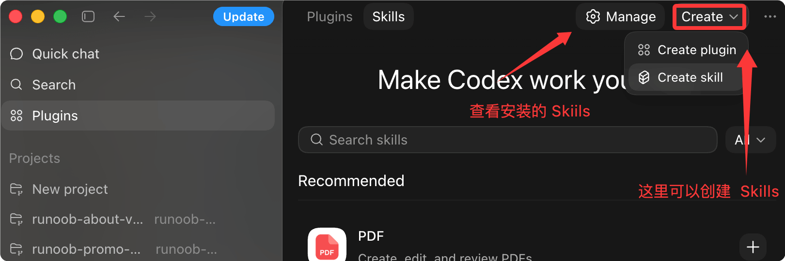
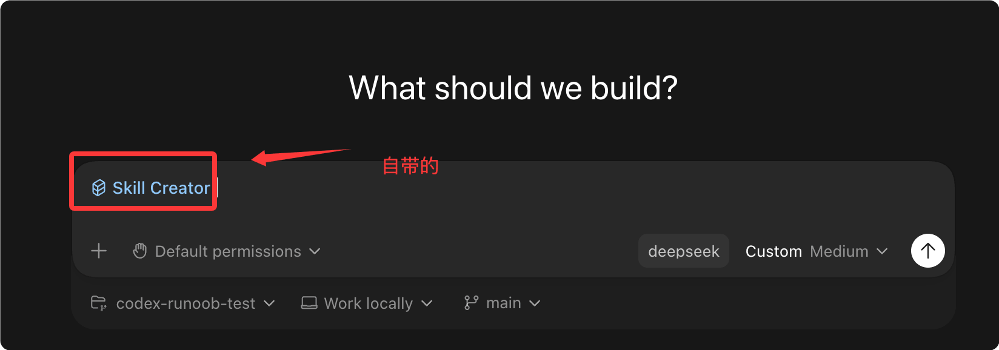
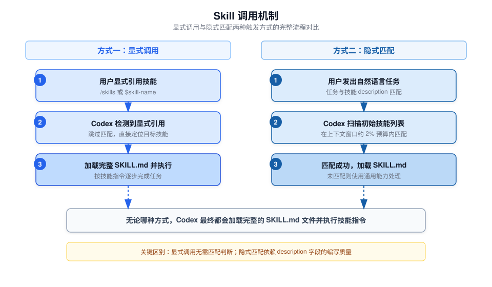
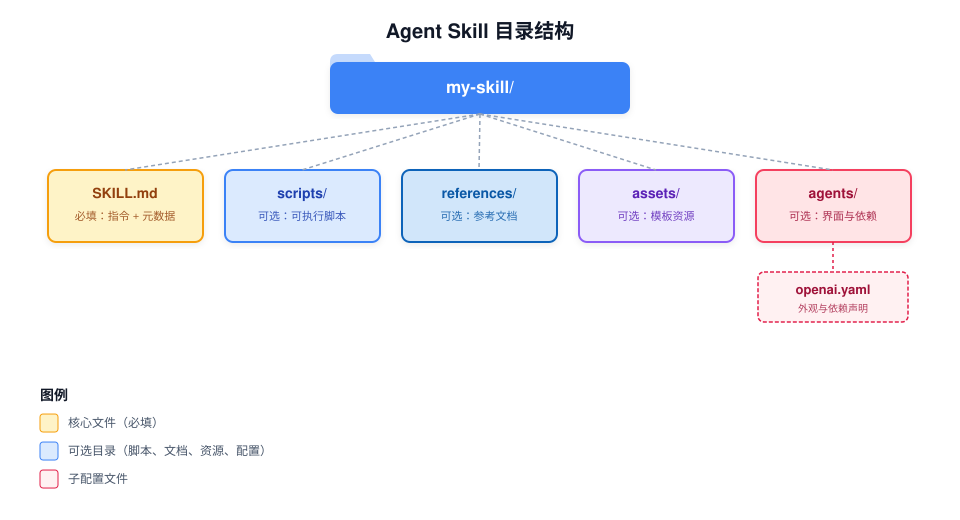

Codex Agent Skills スキルシステム
Agent Skills（エージェントスキル）は Codex のタスク拡張メカニズムであり、命令、リソース、オプションのスクリプトを標準化されたスキルパッケージにまとめることで、Codex が特定のワークフローを確実に実行できるようにします。
Agent Skills（エージェントスキル）の核心は1つのフォルダーであり、そのフォルダー内には必ず次のものを含める必要があります。SKILL.mdファイル。このファイルには少なくとも名前、説明などのメタデータを記入する必要があり、同時に、インテリジェントエージェントに特定のタスクを完了する方法を伝えるガイドラインを添付します。スキルパッケージには、スクリプト、参考資料、テンプレート、その他のさまざまなリソースを統合することもできます。
my-skill/ ├── SKILL.md # 必备文件：元数据 + 执行指引 ├── scripts/ # 可选：可执行脚本 ├── references/ # 可选：参考文档 ├── assets/ # 可选：模板、各类资源文件 └── ... # 其他额外文件与目录
用語説明
- AI agents：AIインテリジェントエージェント（業界共通の訳語）
- Agent Skills：エージェントスキル（専用概念のため固定の呼称を維持）
- metadata：メタデータ
- workflows：ビジネスプロセス/実行フロー
Agent Skills とは
Skills は再利用可能なワークフローを記述するためのフォーマットです。
各 Skill は本質的に、SKILL.mdファイルを含むディレクトリです。Codex はその中の指示を読み取り、手順に従って実行します。
Skill は、Codex に渡す「標準操作手順」のようなものと考えることができます。何を、いつ、どのように行うかを明確に定義すれば、Codex は適切なタイミングで自動的にそれをアクティブ化したり、明示的に呼び出したときに実行したりできます。
Skills は「記述フォーマット」であり、Plugins（プラグイン）は「配布フォーマット」です。まず Skills でワークフロー自体を設計し、他の開発者に配布する必要があるときに Plugin としてパッケージ化します。
Skills は Codex CLI、IDE 拡張機能、Codex App のすべてで使用できます。
プラグイン内で Skills を表示または作成できます：

Codex には標準でSkill Creator、上の図のCreat skillをクリックすると、Skill 作成ウィンドウに移動します。そこで、どのような Skill かをそのまま伝えることができます：

インストール済み Skills を表示：

スキルの仕組み
Codex は漸進的情報開示（Progressive Disclosure）というメカニズムを採用してコンテキストウィンドウを管理し、すべてのスキルコンテンツを一度に読み込んでプロンプトスペースを圧迫することを避けます。
段階的読み込みの流れ
Codex の起動時には、各スキルの名前、説明、ファイルパスのみが初期リストとして読み込まれます。
Codex が特定のスキルを使用すると決定した場合にのみ、完全なSKILL.md指示内容が読み込まれます。
プロンプトスペースを圧迫しないように、初期スキルリストの文字数はモデルのコンテキストウィンドウの約 2%、またはコンテキストウィンドウが不明な場合は 8,000 文字に制限されています。
スキルをインストールしすぎた場合、Codex はまず説明文を短縮します。それでも制限を超える場合は、一部のスキルが初期リストに表示されず、Codex は警告を表示します。
この予算制限は初期スキルリストにのみ適用されます。Codex が特定のスキルを選択した後も、そのスキルの完全な SKILL.md ファイルを読み取ります。
2つのトリガー方式
Codex は2つのスキルアクティブ化方式をサポートしています：

明示的な呼び出し
プロンプトでスキルを直接参照します。CLI または IDE では、/skillsコマンドを使用するか、$記号を入力してスキルを指定します。
明示的に呼び出した場合、Codex はマッチング判断を一切行う必要がなく、完全な SKILL.md を直接読み込んで実行します。
暗黙のマッチング
あなたが発したタスクの説明が、あるスキルのdescriptionフィールドと一致すると、Codex はそのスキルを自動的に選択します。
暗黙のマッチングの正確性は、description フィールドの記述品質に完全に依存します。
description を書くときは、コアなユースケースとトリガーキーワードを前置きしてください。そうすれば、説明が短縮されても Codex は正しくマッチングできます。
スキルディレクトリ構造
1つの Skill は、SKILL.mdファイルを含むディレクトリであり、オプションのスクリプト、参考ドキュメント、リソースファイル、メタデータ設定を含めることができます。
my-skill/
├── SKILL.md # 必备项：使用指引 + 元数据
├── scripts/ # 可选：可执行代码
├── references/ # 可选：参考文档
├── assets/ # 可选：模板、各类资源
└── agents/
└── openai.yaml

各ファイル/ディレクトリの役割は次のとおりです：
| ファイル/ディレクトリ | 必須かどうか | 説明 |
|---|---|---|
| SKILL.md | 必須 | スキルの中核となる指示ファイルであり、必ずnameとdescriptionフィールドを含める必要があります。 |
| scripts/ | 任意 | 実行可能コードを格納し、決定的な動作や外部ツールの呼び出しが必要なシナリオに使用します。 |
| references/ | 任意 | 追加の参考ドキュメントを格納し、Codex がスキル実行時に参照できるようにします。 |
| assets/ | 任意 | テンプレート、画像などの静的リソースファイルを格納します。 |
| agents/openai.yaml | 任意 | UI メタデータ、呼び出しポリシー、ツール依存関係の宣言を設定します。 |
クイックスタート：最初のスキルを作成する
内蔵のスキルクリエーターを使用して、スキルフレームワークをすばやく生成することをお勧めします。
skill-creator を使用して作成
Codex で以下のコマンドを入力すると、対話式の作成フローを開始できます：
例
$skill-creator
クリエーターは次の質問を順に尋ねます：
| 手順 | 質問 | 説明 |
|---|---|---|
| 1 | このスキルは何をするものですか？ | スキルが完了するタスクを定義します |
| 2 | いつトリガーされますか？ | 明示的な呼び出しと暗黙のマッチングトリガーのどちらにするかを決定します |
| 3 | 純粋な指示のみか、スクリプトを含むか？ | デフォルトでは、シンプルで保守しやすい純粋な指示モードを推奨します |
手動作成
スキルディレクトリと SKILL.md ファイルを手動で作成することもできます：
例
name: my-skill
description: このスキルがいつトリガーされるべきか、いつトリガーされるべきでないかを説明します。
---
Codex は以下のスキル指示に従ってタスクを実行します。
Codex はスキルファイルの変更を自動的に検出します。更新後もスキルがすぐに反映されない場合は、Codex を再起動してください。
設定の説明
スキルの保存場所
Codex は、リポジトリレベル、ユーザーレベル、管理者レベル、システムレベルの4つの範囲からスキルを読み取ります。
リポジトリレベルでは、Codex は現在の作業ディレクトリからリポジトリのルートまで上方向にスキャンして、.agents/skillsディレクトリを探します。
2つのスキルが同じnameを持つ場合、Codex はそれらをマージしません。両方ともスキルセレクターに表示されます。
| 適用範囲 | 保存パス | 適用シナリオ |
|---|---|---|
| REPO | $CWD/.agents/skills | 現在の作業ディレクトリにあるスキル。特定のモジュールやマイクロサービスのチーム共有スキルに適しています。 |
| REPO | $CWD/../.agents/skills | 上位ディレクトリにあるスキル。ネストされたディレクトリ構造内の共有領域に適しています。 |
| REPO | $REPO_ROOT/.agents/skills | リポジトリルートにあるスキル。リポジトリ全体のすべてのサブディレクトリで共有される基本スキルに適しています。 |
| USER | $HOME/.agents/skills | ユーザーの個人スキルセット。そのユーザーが任意のリポジトリで使用できるスキルに適しています。 |
| ADMIN | /etc/codex/skills | マシンまたはコンテナレベルの共有スキル。SDK スクリプト、自動化、管理者のデフォルトスキルに適しています。 |
| SYSTEM | OpenAI によって組み込みパッケージ化されています | 幅広いユーザー向けの組み込みスキル（skill-creator や plan スキルなど）。すべてのユーザーが Codex を起動するとすぐに使用できます。 |
Codex はスキルディレクトリのシンボリックリンクをサポートしており、スキャン時にシンボリックリンクのターゲットをたどります。
上記のパスはローカル開発と発見に適用されます。スキルを単一のリポジトリ外のユーザーに配布したり、アプリケーション統合と一緒にパッケージ化したりする必要がある場合は、Plugins メカニズムを使用してください。
スキルの有効化と無効化
に~/.codex/config.tomlで使用する[[skills.config]]設定項目で、ファイルを削除せずにスキルを無効化できます：
例
[[skills.config]]
path = "/path/to/skill/SKILL.md"
enabled = false
設定ファイルを変更した後、Codex を再起動すると有効になります。
オプションのメタデータ設定
にagents/openai.yamlでスキルのUIメタデータ、呼び出しポリシー、ツール依存関係の宣言を設定できます：
例
# UI設定：Codex Appでのスキルの表示方法を制御します
interface:
display_name: "ユーザー向け表示名"
short_description: "ユーザー向けの短い説明"
icon_small: "./assets/small-logo.svg"
icon_large: "./assets/large-logo.png"
brand_color: "#3B82F6"
default_prompt: "スキルと一緒に使用するオプションの周辺プロンプト"
# ポリシー設定：スキルの呼び出し動作を制御します
policy:
allow_implicit_invocation: false # false に設定すると暗黙的マッチングを無効にできます
# 依存関係設定：スキルに必要なツールを宣言します
dependencies:
tools:
- type: "mcp"
value: "openaiDeveloperDocs" # MCPサーバー名
description: "OpenAI Docs MCP server"
transport: "streamable_http" # 転送プロトコル
url: "https://developers.openai.com/mcp" # MCPサービスアドレス
allow_implicit_invocationのデフォルト値はtrue。に設定するとfalse後、Codex はユーザーのプロンプトに基づいてそのスキルを暗黙的に呼び出しませんが、明示的な$skill呼び出しは引き続き有効です。
| 設定項目 | 型 | デフォルト値 | 説明 |
|---|---|---|---|
| interface.display_name | 文字列 | 空 | Codex App に表示される名前 |
| interface.short_description | 文字列 | 空 | Codex App に表示される短い説明 |
| interface.icon_small | パス | 空 | 小アイコンパス（SVG形式） |
| interface.icon_large | パス | 空 | 大アイコンパス（PNG形式） |
| interface.brand_color | 色の値 | 空 | ブランドカラー。UI表示に使用されます |
| interface.default_prompt | 文字列 | 空 | このスキルを使用する際のデフォルトの周辺プロンプト |
| policy.allow_implicit_invocation | ブール値 | true | Codex がこのスキルを暗黙的にマッチングして呼び出すことを許可するかどうか |
| dependencies.tools | 配列 | 空 | スキルが依存するMCPツールを宣言します。各項目に type、value、description などを指定する必要があります |
スキルの配布とインストール
Plugins によるスキルの配布
直接のスキルフォルダーは、ローカルでの作成やリポジトリ内のワークフローに適しています。
再利用可能なスキルを配布する場合、複数のスキルをまとめてパッケージ化する場合、またはスキルをアプリ統合と一緒に公開する場合は、パッケージ化する必要がありますPlugin。
1つのPluginには1つ以上のスキルを含めることができ、アプリマッピング、MCPサーバー設定、表示リソースをオプションでパッケージ化することもできます。
精選されたスキルのインストール
を使用して$skill-installer内蔵スキル以外の厳選スキルをローカルのCodex環境にインストールできます。
例えば、$linearスキルをインストール：
例
$skill-installer linear
skill-installer を使用して他のリポジトリからスキルをダウンロードすることもできます。
Codex は新しくインストールされたスキルを自動的に検出します。すぐに表示されない場合は、Codex を再起動してください。
skill-installer はローカル設定や実験に適しています。独自のスキルを再利用可能な形で配布する場合は、Plugins メカニズムを優先的に使用してください。
ベストプラクティス
| 原則 | 説明 | 適用シーン |
|---|---|---|
| 1つのスキルは1つのことだけを行う | 各スキルの責務を単一に保ち、スキルが多くの無関係なタスクを担わないようにする | すべてのスキルは次に従う必要があります |
| スクリプトよりも指示を優先 | 指示で記述できるフローにはスクリプトを書かないでください。確定的な動作や外部ツールの呼び出しが必要な場合を除きます | ほとんどのシーンで純粋な指示モードを推奨 |
| 指示は命令形を使用 | 命令形で手順を記述し、各ステップの入力と出力を明確にします | SKILL.md の指示を書くとき |
| description のマッチング効果をテストする | 実際のプロンプトでスキルが正しくトリガーされるかをテストし、description の精度を確保します | スキルを書き終えた後 |
| コアとなるトリガーワードを前方に置く | 重要な使用シーンとトリガーワードを description の前に置き、短縮後もマッチングできるようにします | description が切り詰められる可能性がある場合 |
よくある質問
スキル更新後に反映されない？
Codex はスキルファイルの変更を自動的に検出します。
更新後もスキルがリストに表示されない場合は、Codex を再起動してください。
2つのスキルが同名の場合どうなる？
Codex は同名のスキルをマージしません。両方ともスキルセレクターに表示されます。
混乱を避けるために、異なるスコープで同じスキル名を使用しないことをお勧めします。
暗黙のマッチングが不正確な場合は？
まず、descriptionにそのスキルの使用シーンと境界が明確に記述されているか確認してください。
コアとなるトリガーワードを前方に置き、重要な情報が説明の後半に来ないようにします。
暗黙的マッチングが不要な場合は、agents/openai.yamlでallow_implicit_invocationをfalse。
Skills はいつ使うのか、Plugins はいつ使うのか？
Skills は作成形式であり、ローカル開発やリポジトリ内のチーム共有に適しています。
スキルを他の開発者に配布する場合、複数のスキルをパッケージ化する場合、またはアプリ統合と一緒に公開する場合は、Plugins 形式を使用します。
初期スキルリストが切り詰められた場合の対処法？
各スキルの description を簡潔にし、短く正確にします。
最もコアなトリガーワードが description の先頭に来るようにして、短縮されても正しくマッチングできるようにします。
現在のタスクであまり使用しないスキルは、一時的に無効化を検討できます。
その他の拡張